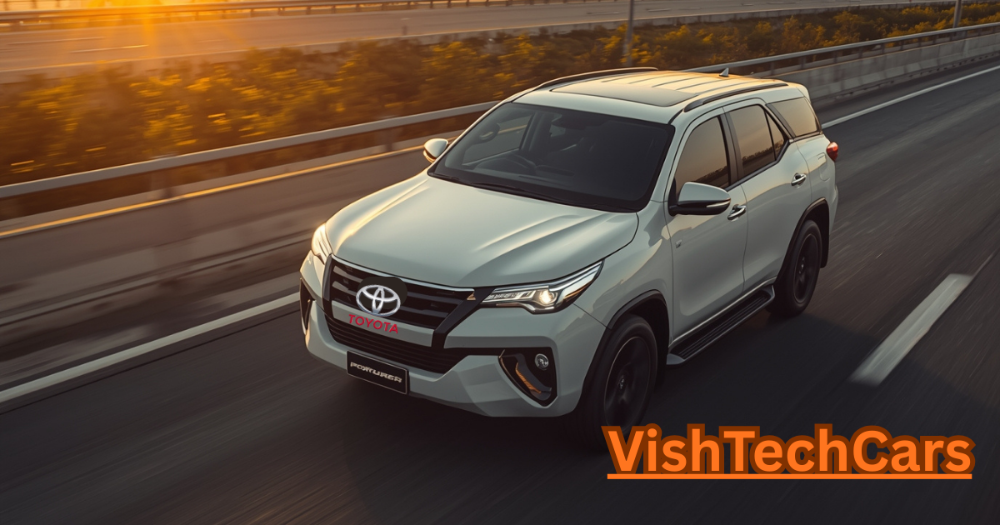

Toyota Mini Fortuner 2026: Why This 8 Lakh SUV is the Dream of Every Indian Family

Writing this 1600-word article today is more than just sharing news for me. It is a message of joy for all those fathers who want to give their children a safe and stylish SUV but are held back by high prices. Toyota has finally understood our silent struggle. The Toyota Mini Fortuner 2026 is that dream finally becoming a reality. It is an SUV that gives you the 'Boss' feeling on the road without taking away your entire life's savings."
The wait is finally over. The Indian roads are about to witness a revolution that hasn't happened in a decade. While every other car manufacturer is busy making simple hatchbacks, Toyota has decided to strike the heart of the Indian middle class with the Toyota Mini Fortuner 2026. With an expected starting price of just ₹7.99 Lakh, this car is not just a vehicle; it's a movement.
1. The Legacy: Why Toyota Rules Indian Hearts
To understand the Mini Fortuner, we must first look at the legacy of Toyota in India. From the iconic Qualis that ruled the taxi markets to the Innova that became a symbol of luxury travel, Toyota has always stood for Indestructibility. A Toyota engine is famously known to last for 5,00,000 kilometers without a major overhaul.
People in India don't just buy a car; they buy a member for their family. They want a car that won't leave them stranded on a rainy night. The Mini Fortuner carries this same bloodline. It is designed to be as tough as a mountain and as reliable as a childhood friend.
2. Exterior Design: A Presence That Demands Respect
When you see the Mini Fortuner in your rear-view mirror, you will move aside. The design language is inspired by the legendary 'Land Cruiser' and the 'Fortuner Legender'. The front grille is massive, featuring thick chrome accents that glint in the sun. The high bonnet line gives it a 'Butch' look that no other SUV in the 8-10 Lakh segment can match.
It features sharp LED DRLs that look like eyebrows of a predator. The ground clearance is a massive 205mm, which means you can drive through flooded roads or broken village paths without a second thought. The wheel arches are muscular, housing 17-inch alloy wheels that look like they belong on a much more expensive vehicle. This is not just a car; it's an accessory for your social status.
3. Interior: Luxury Within Reach
Step inside, and the world changes. Toyota has abandoned the boring old interiors for a more premium, 'Cockpit' style cabin. The dashboard is wrapped in high-quality materials with silver inserts. The 10.25-inch touchscreen infotainment system is the brain of the car, offering seamless connectivity with your smartphone.
But the real luxury is in the comfort. The seats are designed for long Indian road trips. Whether you are driving from Delhi to Ladakh or Mumbai to Goa, the lumbar support ensures your back stays fresh. The Panoramic Sunroof is the cherry on top, making the cabin feel spacious and connected to the sky. It’s a cabin where you won't just sit; you will relax.
4. The Hybrid Miracle: 28 kmpl Mileage
In 2026, petrol prices are no joke. Toyota understands that an Indian buyer wants a big car but with a small fuel bill. The Mini Fortuner comes with Toyota’s Strong Hybrid Technology. This means it has a battery and a motor that work together with the engine.
In city traffic, the car is as silent as a ghost because it runs on electricity. On highways, the petrol engine kicks in to give you the power you need. The result? A mind-blowing mileage of 28 kmpl. That’s more than some entry-level hatchbacks! You will spend more on your coffee than on your fuel.
The "Paisa Vasool" Specifications Table
| Feature | Description |
|---|---|
| 💰 Expected Price | ₹7.99 Lakh - ₹13.50 Lakh |
| ⛽ Engine | 1.2L Petrol / 1.2L Strong Hybrid |
| 🛡️ Safety | 6 Airbags, ABS, EBD, ESP (Standard) |
| 📺 Tech | 360-degree Camera, ADAS, HUD |
| 🌅 Feature | Voice-Controlled Electric Sunroof |
5. The Battle: Why It Kills the Competition
The Indian SUV market is crowded, but the Mini Fortuner stands alone. Let’s look at why:
Vs Tata Punch & Hyundai Exter
While these are great budget cars, they feel like 'compact' vehicles. The Mini Fortuner feels like a 'Proper' SUV. The suspension of the Toyota is tuned for much harsher roads, and the brand value of Toyota is unmatched in the second-hand market.
Vs Mahindra Thar (RWD)
The Thar is for off-roading, but it is not a family car. Getting into the back seat of a Thar is a struggle for elders. The Mini Fortuner offers the same 'Macho' look but with the convenience of 4-doors and a comfortable ride for your parents.
6. Safety: Because Your Family is Precious
Safety is where Toyota never compromises. The 2026 Mini Fortuner is built on a high-tensile steel frame that is designed to absorb impact. It comes with 6 Airbags even in the mid-variants. The inclusion of ADAS (Advanced Driver Assistance Systems) means the car can automatically brake if it senses a collision. It has lane-keep assist and a blind-spot monitor. When you are inside a Toyota, you are inside a fortress.
7. Resale Value: The Investment Factor
Ask any car expert, and they will tell you—Toyota has the best resale value in India. If you buy a Mini Fortuner today for ₹10 Lakh, you can likely sell it after 5 years for a very high price. It’s like keeping your money in a fixed deposit that you can drive! This is why it is the smartest financial decision for any 2026 buyer.
8. Maintenance: Low Cost, High Trust
One of the biggest myths is that Toyota maintenance is expensive. On the contrary, because the parts are so durable, they don't need frequent replacement. Toyota's service network has reached the smallest towns in India. Whether you are in a metro city or a remote village, help is always around the corner. The service experience at Toyota is known to be the best in the industry—they treat you like royalty.
Final Verdict: The Legend in the Making
The Toyota Mini Fortuner 2026 is more than just a car. It is the answer to the prayers of millions of Indians who wanted luxury, power, and reliability at an honest price. It is a car that will make you feel like a King on the road and a smart investor on paper.
Do you agree? Is the Mini Fortuner the best SUV of 2026? Let us know in the comments below!